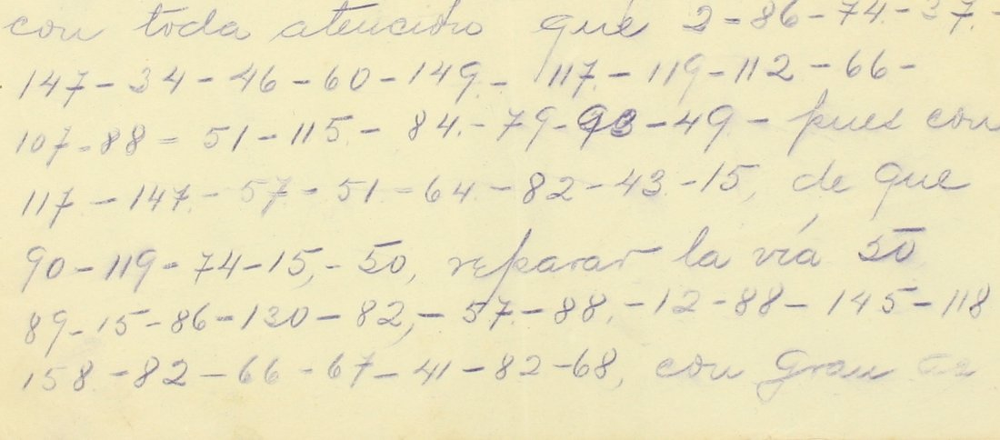

At a glanceKnown key applied · complete
- The telegrams
- Three signed drafts of General Guillermo Rubio Navarrete, a general of the federal army, to the Minister (Secretary) of War and Navy in Mexico City: 18 July 1913 from Lampazos (Nuevo León, incomplete), 13 March and 18 March 1914 from Zacatecas.
- Where
- Centro de Estudios de Historia de México (CEHM-Carso, Fundación Carlos Slim), fondo DLXXIII, Manuscritos del General Guillermo Rubio Navarrete: DLXXIII.1.30.16-49, 2.41.9-41 and 2.41.13-41. The key: DLXXIII.1.28.14-23.
- The cipher
- "Clave núm. 109, Secretaría de Guerra y Marina, con el General Guillermo Rubio Navarrete": a printed table of 160 numbers for letters, syllables and military words. The numbers stand inside the plain text, joined by dashes.
- How it was deciphered
- The printed sheet was transcribed with nothing added, frozen, and checked on a contemporary pair: a typed telegram of 30 March 1914 and its pencil draft, where Rubio wrote the plain text above the numbers. The held-out part came back 1.000 of characters and words, against at most 0.111 for permuted tables.
- What it says
- The garrison at Laredo is courted by the Carrancistas and its commander cannot be fully trusted; an old general in San Antonio, Texas, is in touch with revolutionaries; at Zacatecas Rubio is waiting for material and troops to rebuild the railway to Torreón while the rebels destroy it.
- Still open
- Nothing in these three telegrams. The other "en clave" pieces of the fonds use other tables, which are not in the file, and are not read here. Three words are probable.
- Credit
- Brice Dudout (Europe chiffrée), working with Claude Opus 5.5: the identification of the key sheet, its test on the contemporary pair, the transcription of the three telegrams, the Spanish text and the English translation. His write-up.
01 The telegrams
After the coup of February 1913, General Victoriano Huerta's federal army fought Venustiano Carranza's Constitutionalists. Rubio Navarrete commanded first in the Northeast, at Lampazos (Nuevo León) in the summer of 1913 against the troops of Pablo González, then at Zacatecas in the spring of 1914, as Villa marched on Torreón. His drafts of telegrams to the Minister of War are partly in cipher, and what the cipher carries is what he would not leave to the telegraph clerks.

The three drafts: DLXXIII.1.30.16-49 (Lampazos, 18 July 1913, incomplete), 2.41.9-41 (13 March 1914) and 2.41.13-41 (18 March 1914). The fonds holds other telegrams "en clave", but they use other tables, among them an alphabetical numerical syllabary from 1 to 255 for the traffic with General Téllez and the División del Bravo, a two-figure code, a presidential code and a "Clave nº 99". Those pieces are not read here.
02 The cipher
Clave núm. 109 is a printed grid. Letters have several numbers for the vowels (1–3 for u, 13–15 for o, 25–27 for i, 37–39 for e, 49–51 for a) and run on to 61 d up to 93 z; syllables (pa, pe… ta, te, ti) fill the upper numbers, and a few military words have a number of their own (98 Gobernador, 106 tropa, 107 fuerza, 112 vía, 132 General). Rubio wrote the numbers inside the plain text of the draft, separated by dashes, and spelled out the words that were not in the table, so a name such as Téllez comes out as te-e-ll-e-z.
03 The key and its test
The key is the sheet itself: the printed table filed with the telegrams (DLXXIII.1.28.14-23). Every number of the three telegrams is on it, and no value was added or corrected. The transcription of the sheet is the project's key.tsv.
To test it, Brice Dudout used a telegram that survives twice: the typed telegram of 30 March 1914 (DLXXIII.2.41.18-41) and its pencil draft (DLXXIII.1.29.9-30), on which Rubio wrote the plain text above the cipher numbers, "… la ha dado guarnición de dicha plaza por conferencia tenida hoy. Espero fuerzas". The key and the protocol were frozen and hashed before the measurement, and the first ten groups, which had been checked by eye, were left out. On the held-out part (9 words) the key gives 1.000 of characters and 1.000 of words; 200 control keys, with the table's values permuted, give at most −0.021 and 0.111. The thresholds, 0.85 and 0.75, were met. The rest of that telegram, which has no contemporary plain text, reads "para poder seguir mis trabajos al norte".
04 The reading
The clear words that the writer left around the numbers are in angle brackets and do not count; braces mark a probable reading.
Lampazos, 18 July 1913
<Hónrame comunicar a Ud. personas de confianza me informan que> guarnicion laredo es muy solicitada <por> carrancismo <y que jefe de la plaza> no merece toda confianza <, así como que general> treviño <está en> san antonio texas <en> relaciones <con revolucionarios. Permítome indicar conveniencia de la estancia del Sr. Gral.> teellez en laredo <, así como mandar persona de confianza> a san antonio <, pues> general treviño <por su> edad <se ha hecho muy maleable y siempre está de acuerdo con la última persona con quien habla. En la entrevista que […]>
Persons he trusts tell Rubio that the Laredo garrison is much courted by Carrancismo and that the commander of the place does not deserve full trust; also that General Treviño is at San Antonio, Texas, in relations with revolutionaries. He suggests that General Téllez should stay at Laredo and that a trusted person be sent to San Antonio, since Treviño, because of his age, has become very pliable and always agrees with the last person he talks to. The leaf breaks off there.
Zacatecas, 13 March 1914
<Hónrome participar a Ud. que> unicamente espero {material} <y> fuerzas para comenzar <la> reconstruccion <de> la via <que> esta terminada <en> dos meses <. Respetuosamente. Gral. de División G. Rubio.>
He is waiting only for material and troops to begin rebuilding the railway, which will be finished in two months.
Zacatecas, 18 March 1914
<Me es honroso participar a usted con toda atención que> urge sobemanera el envia de fuerzas a esta {plza} <, pues con> el solo anuncio <de que> vengo a <reparar la vía> a torreon los rebeldes se estan dedicando <con gran actividad a> {destruirla} <totalmente, lo que> es imposible evitar <con el> escaso <efectivo de fuerzas> que existen en esta <. Respetuosamente. G. Rubio.>
It is extremely urgent to send troops to this place, for at the mere announcement that he is coming to repair the railway to Torreón the rebels are busy destroying it completely, which cannot be prevented with the few troops there are.
The spelling of the cipher is kept: teellez, sobemanera (the r of sobre omitted), envia for envío. Cipher parts of the three telegrams: 67 words; 64 certain (95.5%), 3 probable (4.5%), none restored or unresolved. To Brice Dudout's knowledge nothing in the cyphersolver repository, in Cryptiana or in Roberto Narváez's open-access articles reads them, and Narváez's book Criptografía diplomática, política y militar en México 1813-1926 (SRE, 2019) could not be consulted.
05 What remains uncertain
- {material} (13 March 1914): the second 159 (te) is badly formed; the value is required by ma-te-ri-a-l.
- {plza} (18 March 1914): group 93 (z) is written over another figure, and the cipher gives p-l-z-a without the second a, which is not restored.
- {destruirla}: the middle figure of 153 (ru) lies under the CEHM watermark; de-s-t-ru-i-r-la is what the sense requires.
- The people. General Joaquín Téllez commanded the federal forces in the Northeast. The elderly "General Treviño" at San Antonio is probably Gerónimo Treviño (born 1836), former military chief of the Northeast under Porfirio Díaz; the identification was not checked in the sources.
- The rest of the fonds. The other "en clave" pieces (one of 19 July 1913, DLXXIII.1.30.17-49, carries a pencil interlinear decipherment) use other tables that are not in the file. Catalogue no. 1468 stays open for them.
Full texts
The transcription and the decryption of every document on this page, so that the reading can be used and checked. Short files are shown here; all are in the repository.
Lampazos, 18 July 1913, to the Minister of War and Navy (DLXXIII.1.30.16-49, incomplete)
Laredo garrison courted by the Carrancistas; General Treviño at San Antonio in touch with revolutionaries; Téllez should stay at Laredo.
Transcription
# CEHM-Carso, fondo DLXXIII (Gen. Guillermo Rubio Navarrete): three drafts of telegrams to the Minister of War. # Plain text of the telegram in << >>; cipher groups as written (numbers of "Clave núm. 109"); [struck: ...] = struck out by the writer. ## DLXXIII.1.30.16-49 (18 Jul 1913) << Honrame comunicar a Ud. personas de confianza me informan que >> 74 2 50 86 62 43 13 82 54 150 68 38 88 53 76 147 56 43 158 65 << por >> 41 87 50 82 43 88 52 << y que Jefe de la plaza >> 63 47 150 42 89 14 65 126 73 25 125 93 50 << asi como que General >> 89 150 90 26 83 15 << esta en >> 144 82 125 89 14 62 13 159 92 50 88 << en >> 150 54 43 [struck: un groupe illisible] 14 60 88 << con revolucionarios. Permitome indicar conveniencia de la estancia del Sr Gral >> 159 38 80 37 93 37 82 54 150 68 << asi como mandar persona de confianza >> 50 144 82 51 82 89 15 62 14 << pues >> [struck: 74 38 60 149 79] 132 89 150 90 26 83 15 << por su >> 39 65 61 << se ha hecho muy maleable y siempre esta de acuerdo con la ultima persona con quien habla. En la entrevista que >> [end of page; draft incomplete] ## DLXXIII.2.41.9-41 (13 Mar 1914) << Honrome participar a Ud. que >> 1 62 41 47 82 159 118 21 152 46 159 151 49 79 << y >> 107 88 20 149 44 47 82 93 50 86 << la >> 150 44 82 88 89 86 3 120 << de >> 54 112 << que >> 118 158 159 86 48 59 65 << en >> 68 88 47 145 88 << Respetuosamente. Gral. de División. G. Rubio >> ## DLXXIII.2.41.13-41 (18 Mar 1914) << Me es honroso participar a usted con toda atencion que >> 2 86 74 37 147 34 46 60 149 117 119 112 66 107 88 51 115 84 79 93 49 << pues con >> 117 147 57 51 64 82 43 15 << de que >> 90 119 74 15 50 << reparar la via >> 50 89 15 86 130 82 57 88 12 88 145 118 158 82 66 67 41 82 68 << con gran actividad a >> 66 88 89 153 27 86 54 << totalmente, lo que >> 118 27 81 23 146 70 55 39 90 27 158 86 << con el >> 118 41 147 << efectivo de fuerzas >> 85 3 39 157 27 88 159 82 119 115 << Respetuosamente. G Rubio >>
Decryption
# Group-by-group decryption with key.tsv (Clave núm. 109, frozen SHA-256 9adb1190...). ## DLXXIII.1.30.16-49 (18 Jul 1913) << Honrame comunicar a Ud. personas de confianza me informan que >> 74 2 50 86 62 43 13 82 54 150 68 38 88 53 76 147 56 43 158 65 g u a r ni ci o n la re do e s mu y so li ci ta da << por >> 41 87 50 82 43 88 52 ca rr a n ci s mo << y que Jefe de la plaza >> 63 47 150 42 89 14 65 126 73 25 125 93 50 no me re ce t o da con f i an z a << asi como que General >> 89 150 90 26 83 15 t re v i ñ o << esta en >> 144 82 125 89 14 62 13 159 92 50 88 sa n an t o ni o te x a s << en >> 150 54 43 14 60 88 re la ci o ne s << con revolucionarios. Permitome indicar conveniencia de la estancia del Sr Gral >> 159 38 80 37 93 37 82 54 150 68 te e ll e z e n la re do << asi como mandar persona de confianza >> 50 144 82 51 82 89 15 62 14 a sa n a n t o ni o << pues >> 132 89 150 90 26 83 15 General t re v i ñ o << por su >> 39 65 61 e da d << se ha hecho muy maleable y siempre esta de acuerdo con la ultima persona con quien habla. En la entrevista que >> [fin de la page, document incomplet] ## DLXXIII.2.41.9-41 (13 Mar 1914) << Honrome participar a Ud. que >> 1 62 41 47 82 159 118 21 152 46 159 151 49 79 u ni ca me n te es pe ro ma te ri a l << y >> 107 88 20 149 44 47 82 93 50 86 fuerza s pa ra co me n z a r << la >> 150 44 82 88 89 86 3 120 re co n s t r u ción << de >> 54 112 la vía << que >> 118 158 159 86 48 59 65 es ta te r mi na da << en >> 68 88 47 145 88 do s me se s << Respetuosamente. Gral. de División. G. Rubio >> ## DLXXIII.2.41.13-41 (18 Mar 1914) << Me es honroso participar a usted con toda atencion que >> 2 86 74 37 147 34 46 60 149 117 119 112 66 107 88 51 115 84 79 93 49 u r g e so be ma ne ra el en vía de fuerza s a esta p l z a << pues con >> 117 147 57 51 64 82 43 15 el so lo a nu n ci o << de que >> 90 119 74 15 50 v en g o a << reparar la via >> 50 89 15 86 130 82 57 88 12 88 145 118 158 82 66 67 41 82 68 a t o r reo n lo s rebelde s se es ta n de di ca n do << con gran actividad a >> 66 88 89 153 27 86 54 de s t ru i r la << totalmente, lo que >> 118 27 81 23 146 70 55 39 90 27 158 86 es i m po si b le e v i ta r << con el >> 118 41 147 es ca so << efectivo de fuerzas >> 85 3 39 157 27 88 159 82 119 115 q u e ex i s te n en esta << Respetuosamente. G Rubio >>
Reading
# Established text (Spanish, cipher spelling kept)
{x} probable; <x> = plain text of the telegram around the cipher (not counted).
## Lampazos, 18 July 1913, to the Minister of War and Navy (DLXXIII.1.30.16-49, incomplete)
<Hónrame comunicar a Ud. personas de confianza me informan que> guarnicion laredo es muy solicitada <por> carrancismo <y que jefe de la plaza> no merece toda confianza <, así como que general> treviño <está en> san antonio texas <en> relaciones <con revolucionarios. Permítome indicar conveniencia de la estancia del Sr. Gral.> teellez en laredo <, así como mandar persona de confianza> a san antonio <, pues> general treviño <por su> edad <se ha hecho muy maleable y siempre está de acuerdo con la última persona con quien habla. En la entrevista que […]>
## [Zacatecas], 13 March 1914, to the Secretary of War (DLXXIII.2.41.9-41)
<Hónrome participar a Ud. que> unicamente espero {material} <y> fuerzas para comenzar <la> reconstruccion <de> la via <que> esta terminada <en> dos meses <. Respetuosamente. Gral. de División G. Rubio.>
## [Zacatecas], 18 March 1914, to the Minister of War (DLXXIII.2.41.13-41)
<Me es honroso participar a usted con toda atención que> urge sobemanera el envia de fuerzas a esta {plza} <, pues con> el solo anuncio <de que> vengo a <reparar la vía> a torreon los rebeldes se estan dedicando <con gran actividad a> {destruirla} <totalmente, lo que> es imposible evitar <con el> escaso <efectivo de fuerzas> que existen en esta <. Respetuosamente. G. Rubio.>Translation
# English translation ## Lampazos, 18 July 1913, to the Minister of War and Navy (DLXXIII.1.30.16-49, incomplete) I have the honour to inform you that persons I trust tell me that the Laredo garrison is much courted by Carrancismo and that the commander of the place does not deserve full trust; also that General Treviño is at San Antonio, Texas, in relations with revolutionaries. I venture to point out that General Téllez should stay at Laredo, and that a trusted person should be sent to San Antonio, since General Treviño, because of his age, has become very pliable and always agrees with the last person he talks to. In the interview that […] ## [Zacatecas], 13 March 1914, to the Secretary of War (DLXXIII.2.41.9-41) I have the honour to inform you that I am only waiting for material and troops to begin the reconstruction of the railway, which will be finished in two months. Respectfully, General of Division G. Rubio. ## [Zacatecas], 18 March 1914, to the Minister of War (DLXXIII.2.41.13-41) I have the honour to inform you, with all respect, that it is extremely urgent to send troops to this place, for at the mere announcement that I am coming to repair the railway to Torreón, the rebels are setting about destroying it completely with great activity, which it is impossible to prevent with the small number of troops that there are in this [place]. Respectfully, G. Rubio.
[Zacatecas], 13 March 1914, to the Secretary of War (DLXXIII.2.41.9-41)
Only waiting for material and troops to rebuild the railway; two months to finish.
Transcription
# CEHM-Carso, fondo DLXXIII (Gen. Guillermo Rubio Navarrete): three drafts of telegrams to the Minister of War. # Plain text of the telegram in << >>; cipher groups as written (numbers of "Clave núm. 109"); [struck: ...] = struck out by the writer. ## DLXXIII.1.30.16-49 (18 Jul 1913) << Honrame comunicar a Ud. personas de confianza me informan que >> 74 2 50 86 62 43 13 82 54 150 68 38 88 53 76 147 56 43 158 65 << por >> 41 87 50 82 43 88 52 << y que Jefe de la plaza >> 63 47 150 42 89 14 65 126 73 25 125 93 50 << asi como que General >> 89 150 90 26 83 15 << esta en >> 144 82 125 89 14 62 13 159 92 50 88 << en >> 150 54 43 [struck: un groupe illisible] 14 60 88 << con revolucionarios. Permitome indicar conveniencia de la estancia del Sr Gral >> 159 38 80 37 93 37 82 54 150 68 << asi como mandar persona de confianza >> 50 144 82 51 82 89 15 62 14 << pues >> [struck: 74 38 60 149 79] 132 89 150 90 26 83 15 << por su >> 39 65 61 << se ha hecho muy maleable y siempre esta de acuerdo con la ultima persona con quien habla. En la entrevista que >> [end of page; draft incomplete] ## DLXXIII.2.41.9-41 (13 Mar 1914) << Honrome participar a Ud. que >> 1 62 41 47 82 159 118 21 152 46 159 151 49 79 << y >> 107 88 20 149 44 47 82 93 50 86 << la >> 150 44 82 88 89 86 3 120 << de >> 54 112 << que >> 118 158 159 86 48 59 65 << en >> 68 88 47 145 88 << Respetuosamente. Gral. de División. G. Rubio >> ## DLXXIII.2.41.13-41 (18 Mar 1914) << Me es honroso participar a usted con toda atencion que >> 2 86 74 37 147 34 46 60 149 117 119 112 66 107 88 51 115 84 79 93 49 << pues con >> 117 147 57 51 64 82 43 15 << de que >> 90 119 74 15 50 << reparar la via >> 50 89 15 86 130 82 57 88 12 88 145 118 158 82 66 67 41 82 68 << con gran actividad a >> 66 88 89 153 27 86 54 << totalmente, lo que >> 118 27 81 23 146 70 55 39 90 27 158 86 << con el >> 118 41 147 << efectivo de fuerzas >> 85 3 39 157 27 88 159 82 119 115 << Respetuosamente. G Rubio >>
Decryption
# Group-by-group decryption with key.tsv (Clave núm. 109, frozen SHA-256 9adb1190...). ## DLXXIII.1.30.16-49 (18 Jul 1913) << Honrame comunicar a Ud. personas de confianza me informan que >> 74 2 50 86 62 43 13 82 54 150 68 38 88 53 76 147 56 43 158 65 g u a r ni ci o n la re do e s mu y so li ci ta da << por >> 41 87 50 82 43 88 52 ca rr a n ci s mo << y que Jefe de la plaza >> 63 47 150 42 89 14 65 126 73 25 125 93 50 no me re ce t o da con f i an z a << asi como que General >> 89 150 90 26 83 15 t re v i ñ o << esta en >> 144 82 125 89 14 62 13 159 92 50 88 sa n an t o ni o te x a s << en >> 150 54 43 14 60 88 re la ci o ne s << con revolucionarios. Permitome indicar conveniencia de la estancia del Sr Gral >> 159 38 80 37 93 37 82 54 150 68 te e ll e z e n la re do << asi como mandar persona de confianza >> 50 144 82 51 82 89 15 62 14 a sa n a n t o ni o << pues >> 132 89 150 90 26 83 15 General t re v i ñ o << por su >> 39 65 61 e da d << se ha hecho muy maleable y siempre esta de acuerdo con la ultima persona con quien habla. En la entrevista que >> [fin de la page, document incomplet] ## DLXXIII.2.41.9-41 (13 Mar 1914) << Honrome participar a Ud. que >> 1 62 41 47 82 159 118 21 152 46 159 151 49 79 u ni ca me n te es pe ro ma te ri a l << y >> 107 88 20 149 44 47 82 93 50 86 fuerza s pa ra co me n z a r << la >> 150 44 82 88 89 86 3 120 re co n s t r u ción << de >> 54 112 la vía << que >> 118 158 159 86 48 59 65 es ta te r mi na da << en >> 68 88 47 145 88 do s me se s << Respetuosamente. Gral. de División. G. Rubio >> ## DLXXIII.2.41.13-41 (18 Mar 1914) << Me es honroso participar a usted con toda atencion que >> 2 86 74 37 147 34 46 60 149 117 119 112 66 107 88 51 115 84 79 93 49 u r g e so be ma ne ra el en vía de fuerza s a esta p l z a << pues con >> 117 147 57 51 64 82 43 15 el so lo a nu n ci o << de que >> 90 119 74 15 50 v en g o a << reparar la via >> 50 89 15 86 130 82 57 88 12 88 145 118 158 82 66 67 41 82 68 a t o r reo n lo s rebelde s se es ta n de di ca n do << con gran actividad a >> 66 88 89 153 27 86 54 de s t ru i r la << totalmente, lo que >> 118 27 81 23 146 70 55 39 90 27 158 86 es i m po si b le e v i ta r << con el >> 118 41 147 es ca so << efectivo de fuerzas >> 85 3 39 157 27 88 159 82 119 115 q u e ex i s te n en esta << Respetuosamente. G Rubio >>
Reading
# Established text (Spanish, cipher spelling kept)
{x} probable; <x> = plain text of the telegram around the cipher (not counted).
## Lampazos, 18 July 1913, to the Minister of War and Navy (DLXXIII.1.30.16-49, incomplete)
<Hónrame comunicar a Ud. personas de confianza me informan que> guarnicion laredo es muy solicitada <por> carrancismo <y que jefe de la plaza> no merece toda confianza <, así como que general> treviño <está en> san antonio texas <en> relaciones <con revolucionarios. Permítome indicar conveniencia de la estancia del Sr. Gral.> teellez en laredo <, así como mandar persona de confianza> a san antonio <, pues> general treviño <por su> edad <se ha hecho muy maleable y siempre está de acuerdo con la última persona con quien habla. En la entrevista que […]>
## [Zacatecas], 13 March 1914, to the Secretary of War (DLXXIII.2.41.9-41)
<Hónrome participar a Ud. que> unicamente espero {material} <y> fuerzas para comenzar <la> reconstruccion <de> la via <que> esta terminada <en> dos meses <. Respetuosamente. Gral. de División G. Rubio.>
## [Zacatecas], 18 March 1914, to the Minister of War (DLXXIII.2.41.13-41)
<Me es honroso participar a usted con toda atención que> urge sobemanera el envia de fuerzas a esta {plza} <, pues con> el solo anuncio <de que> vengo a <reparar la vía> a torreon los rebeldes se estan dedicando <con gran actividad a> {destruirla} <totalmente, lo que> es imposible evitar <con el> escaso <efectivo de fuerzas> que existen en esta <. Respetuosamente. G. Rubio.>Translation
# English translation ## Lampazos, 18 July 1913, to the Minister of War and Navy (DLXXIII.1.30.16-49, incomplete) I have the honour to inform you that persons I trust tell me that the Laredo garrison is much courted by Carrancismo and that the commander of the place does not deserve full trust; also that General Treviño is at San Antonio, Texas, in relations with revolutionaries. I venture to point out that General Téllez should stay at Laredo, and that a trusted person should be sent to San Antonio, since General Treviño, because of his age, has become very pliable and always agrees with the last person he talks to. In the interview that […] ## [Zacatecas], 13 March 1914, to the Secretary of War (DLXXIII.2.41.9-41) I have the honour to inform you that I am only waiting for material and troops to begin the reconstruction of the railway, which will be finished in two months. Respectfully, General of Division G. Rubio. ## [Zacatecas], 18 March 1914, to the Minister of War (DLXXIII.2.41.13-41) I have the honour to inform you, with all respect, that it is extremely urgent to send troops to this place, for at the mere announcement that I am coming to repair the railway to Torreón, the rebels are setting about destroying it completely with great activity, which it is impossible to prevent with the small number of troops that there are in this [place]. Respectfully, G. Rubio.
[Zacatecas], 18 March 1914, to the Minister of War (DLXXIII.2.41.13-41)
Troops urgently needed: the rebels are destroying the railway to Torreón.
Transcription
# CEHM-Carso, fondo DLXXIII (Gen. Guillermo Rubio Navarrete): three drafts of telegrams to the Minister of War. # Plain text of the telegram in << >>; cipher groups as written (numbers of "Clave núm. 109"); [struck: ...] = struck out by the writer. ## DLXXIII.1.30.16-49 (18 Jul 1913) << Honrame comunicar a Ud. personas de confianza me informan que >> 74 2 50 86 62 43 13 82 54 150 68 38 88 53 76 147 56 43 158 65 << por >> 41 87 50 82 43 88 52 << y que Jefe de la plaza >> 63 47 150 42 89 14 65 126 73 25 125 93 50 << asi como que General >> 89 150 90 26 83 15 << esta en >> 144 82 125 89 14 62 13 159 92 50 88 << en >> 150 54 43 [struck: un groupe illisible] 14 60 88 << con revolucionarios. Permitome indicar conveniencia de la estancia del Sr Gral >> 159 38 80 37 93 37 82 54 150 68 << asi como mandar persona de confianza >> 50 144 82 51 82 89 15 62 14 << pues >> [struck: 74 38 60 149 79] 132 89 150 90 26 83 15 << por su >> 39 65 61 << se ha hecho muy maleable y siempre esta de acuerdo con la ultima persona con quien habla. En la entrevista que >> [end of page; draft incomplete] ## DLXXIII.2.41.9-41 (13 Mar 1914) << Honrome participar a Ud. que >> 1 62 41 47 82 159 118 21 152 46 159 151 49 79 << y >> 107 88 20 149 44 47 82 93 50 86 << la >> 150 44 82 88 89 86 3 120 << de >> 54 112 << que >> 118 158 159 86 48 59 65 << en >> 68 88 47 145 88 << Respetuosamente. Gral. de División. G. Rubio >> ## DLXXIII.2.41.13-41 (18 Mar 1914) << Me es honroso participar a usted con toda atencion que >> 2 86 74 37 147 34 46 60 149 117 119 112 66 107 88 51 115 84 79 93 49 << pues con >> 117 147 57 51 64 82 43 15 << de que >> 90 119 74 15 50 << reparar la via >> 50 89 15 86 130 82 57 88 12 88 145 118 158 82 66 67 41 82 68 << con gran actividad a >> 66 88 89 153 27 86 54 << totalmente, lo que >> 118 27 81 23 146 70 55 39 90 27 158 86 << con el >> 118 41 147 << efectivo de fuerzas >> 85 3 39 157 27 88 159 82 119 115 << Respetuosamente. G Rubio >>
Decryption
# Group-by-group decryption with key.tsv (Clave núm. 109, frozen SHA-256 9adb1190...). ## DLXXIII.1.30.16-49 (18 Jul 1913) << Honrame comunicar a Ud. personas de confianza me informan que >> 74 2 50 86 62 43 13 82 54 150 68 38 88 53 76 147 56 43 158 65 g u a r ni ci o n la re do e s mu y so li ci ta da << por >> 41 87 50 82 43 88 52 ca rr a n ci s mo << y que Jefe de la plaza >> 63 47 150 42 89 14 65 126 73 25 125 93 50 no me re ce t o da con f i an z a << asi como que General >> 89 150 90 26 83 15 t re v i ñ o << esta en >> 144 82 125 89 14 62 13 159 92 50 88 sa n an t o ni o te x a s << en >> 150 54 43 14 60 88 re la ci o ne s << con revolucionarios. Permitome indicar conveniencia de la estancia del Sr Gral >> 159 38 80 37 93 37 82 54 150 68 te e ll e z e n la re do << asi como mandar persona de confianza >> 50 144 82 51 82 89 15 62 14 a sa n a n t o ni o << pues >> 132 89 150 90 26 83 15 General t re v i ñ o << por su >> 39 65 61 e da d << se ha hecho muy maleable y siempre esta de acuerdo con la ultima persona con quien habla. En la entrevista que >> [fin de la page, document incomplet] ## DLXXIII.2.41.9-41 (13 Mar 1914) << Honrome participar a Ud. que >> 1 62 41 47 82 159 118 21 152 46 159 151 49 79 u ni ca me n te es pe ro ma te ri a l << y >> 107 88 20 149 44 47 82 93 50 86 fuerza s pa ra co me n z a r << la >> 150 44 82 88 89 86 3 120 re co n s t r u ción << de >> 54 112 la vía << que >> 118 158 159 86 48 59 65 es ta te r mi na da << en >> 68 88 47 145 88 do s me se s << Respetuosamente. Gral. de División. G. Rubio >> ## DLXXIII.2.41.13-41 (18 Mar 1914) << Me es honroso participar a usted con toda atencion que >> 2 86 74 37 147 34 46 60 149 117 119 112 66 107 88 51 115 84 79 93 49 u r g e so be ma ne ra el en vía de fuerza s a esta p l z a << pues con >> 117 147 57 51 64 82 43 15 el so lo a nu n ci o << de que >> 90 119 74 15 50 v en g o a << reparar la via >> 50 89 15 86 130 82 57 88 12 88 145 118 158 82 66 67 41 82 68 a t o r reo n lo s rebelde s se es ta n de di ca n do << con gran actividad a >> 66 88 89 153 27 86 54 de s t ru i r la << totalmente, lo que >> 118 27 81 23 146 70 55 39 90 27 158 86 es i m po si b le e v i ta r << con el >> 118 41 147 es ca so << efectivo de fuerzas >> 85 3 39 157 27 88 159 82 119 115 q u e ex i s te n en esta << Respetuosamente. G Rubio >>
Reading
# Established text (Spanish, cipher spelling kept)
{x} probable; <x> = plain text of the telegram around the cipher (not counted).
## Lampazos, 18 July 1913, to the Minister of War and Navy (DLXXIII.1.30.16-49, incomplete)
<Hónrame comunicar a Ud. personas de confianza me informan que> guarnicion laredo es muy solicitada <por> carrancismo <y que jefe de la plaza> no merece toda confianza <, así como que general> treviño <está en> san antonio texas <en> relaciones <con revolucionarios. Permítome indicar conveniencia de la estancia del Sr. Gral.> teellez en laredo <, así como mandar persona de confianza> a san antonio <, pues> general treviño <por su> edad <se ha hecho muy maleable y siempre está de acuerdo con la última persona con quien habla. En la entrevista que […]>
## [Zacatecas], 13 March 1914, to the Secretary of War (DLXXIII.2.41.9-41)
<Hónrome participar a Ud. que> unicamente espero {material} <y> fuerzas para comenzar <la> reconstruccion <de> la via <que> esta terminada <en> dos meses <. Respetuosamente. Gral. de División G. Rubio.>
## [Zacatecas], 18 March 1914, to the Minister of War (DLXXIII.2.41.13-41)
<Me es honroso participar a usted con toda atención que> urge sobemanera el envia de fuerzas a esta {plza} <, pues con> el solo anuncio <de que> vengo a <reparar la vía> a torreon los rebeldes se estan dedicando <con gran actividad a> {destruirla} <totalmente, lo que> es imposible evitar <con el> escaso <efectivo de fuerzas> que existen en esta <. Respetuosamente. G. Rubio.>Translation
# English translation ## Lampazos, 18 July 1913, to the Minister of War and Navy (DLXXIII.1.30.16-49, incomplete) I have the honour to inform you that persons I trust tell me that the Laredo garrison is much courted by Carrancismo and that the commander of the place does not deserve full trust; also that General Treviño is at San Antonio, Texas, in relations with revolutionaries. I venture to point out that General Téllez should stay at Laredo, and that a trusted person should be sent to San Antonio, since General Treviño, because of his age, has become very pliable and always agrees with the last person he talks to. In the interview that […] ## [Zacatecas], 13 March 1914, to the Secretary of War (DLXXIII.2.41.9-41) I have the honour to inform you that I am only waiting for material and troops to begin the reconstruction of the railway, which will be finished in two months. Respectfully, General of Division G. Rubio. ## [Zacatecas], 18 March 1914, to the Minister of War (DLXXIII.2.41.13-41) I have the honour to inform you, with all respect, that it is extremely urgent to send troops to this place, for at the mere announcement that I am coming to repair the railway to Torreón, the rebels are setting about destroying it completely with great activity, which it is impossible to prevent with the small number of troops that there are in this [place]. Respectfully, G. Rubio.
Key: key.tsv
06 Sources
- CEHM-Carso, fondo DLXXIII: records 137859, 137995 and 137999 (the three telegrams); DLXXIII.1.28.14-23 (the key sheet); DLXXIII.2.41.18-41 and DLXXIII.1.29.9-30 (the test pair).
- Brice Dudout, Europe chiffrée, Rubio 1913 (2026): text, translation and notes.
Folder: targets/rubio1913/ (notes, transcription, line-by-line decryption, the key sheet, the Spanish text and the English translation, as contributed by Brice Dudout). Images: CEHM public viewer, no explicit licence; one small crop is shown with its credit.